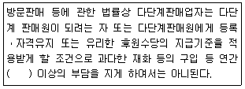
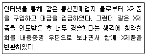
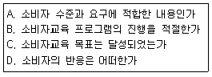
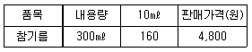
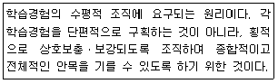
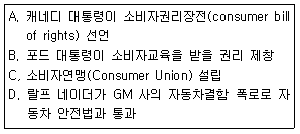
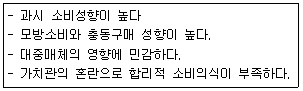
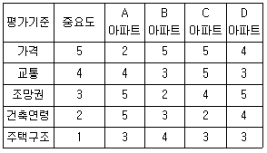
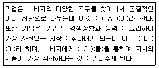

소비자전문상담사-2급 (2011-03-20 기출문제)
1과목: 소비자상담 및 피해구제
1. 소비자분쟁해결기준상, 의복류의 치수(사이즈)가 맞지 않거나 디자인, 색상에 불만이 있을 경우에 교환 또는 환급이 가능한 기간은 구입 후 며칠 이내인가? (단, 제품에 손상이 없는 경우)
- 5일
- 7일
- 10일
- 14일
(정답률: 알수없음)

2. 성공적인 전화상담을 위한 스크립트에 관한 설명으로 틀린 것은?
- 말할 내용을 연극의 각본처럼 미리 준비해 두는 것을 의미한다.
- 전화상담 상황별로 필요하다고 예상되는 내용을 미리 연습하기 위해 작성해 놓은 문장이다.
- 스크립트를 이용한 전화상담은 대면상담 상황에서 사용 가능한 다양한 기법들을 모두 포함한다.
- 상담사는 스크립트를 효과적으로 활용하고 익숙하게 구사할 수 있도록 사전 연습과 훈련이 필수적이다.
(정답률: 알수없음)
3. 인터넷상담에 임하는 소비자상담사의 자세로 틀린 것은?
- 답신을 할 때는 반드시 소속, 성명 등의 신원을 밝힘으로서 신뢰감을 증진시킨다.
- 상담을 신청한 소비자의 신원을 밝히도록 하여, 지속적인 상담을 유지한다.
- 답변은 소비자가 이해하기 쉽도록 자세하고 명확하게 한다.
- 인터넷상담이 바로 안 될 경우를 대비하여, 전화번호, 팩스번호 등을 함께 제시한다.
(정답률: 알수없음)
4. 행정기관에서 소비자상담을 제공해야 하는 필요성을 한마디로 요약하면 사적자치의 한계 때문이다. 현대사회에서 사적자치의 한계 때문이다. 현대 사회에서 사회에서 사적가치의 원칙이 지켜지기 어려운 이유와 가장 거리가 먼 것은?
- 인터넷이 발달된 현대에서 소비자는 상품에 대한 지식과 정보가 많다.
- 대량생산에서 결함상품이 발생하면 대량의 소비자 피해가 생길 우려가 있다.
- 소비자피해를 재판으로 해결하려면 시간, 비용이 많이 든다.
- 개인 소비자는 사업자와 충분한 교섭 능력을 갖기 어렵다.
(정답률: 알수없음)
5. 소비자태도의 구성요소가 아닌 것은?
- 단계적 요소
- 인지적 요소
- 감정적 요소
- 행동의욕적 요소
(정답률: 알수없음)
6. 다음 중 비언어적 상담기법으로 적합하지 않은 것은?
- 소비자를 정면으로 바라보되 가끔씩 눈이 마주친다.
- 소비자가 친밀감을 느끼도록 경청시 격려하듯이 고개를 끄덕인다.
- 소비자와 마음을 열고 직접 상대하는 개방적 자세를 취한다.
- 상담할 때 소비자가 불편하지 않도록 측면에 않아서 듣는다.
(정답률: 알수없음)
7. 소비자단체에서 수행하고 있는 소비자상담의 역할이 아닌 것은?
- 기업에서 제공하는 상품 및 서비스에 대한 소비자의 불이익이나 피해를 구제한다.
- 소비자문제를 여론화시키고 체계적으로 분석하여 소비자 정책에 반영한다.
- 소비생활 전반에 관한 상담을 통하여 소비생활 향상에 기여한다.
- 소비자상담을 통해 밝혀진 문제점을 해결하기 위해 관련 법률 및 제도를 개선한다.
(정답률: 알수없음)
8. 소비자단체에서 소비자상담을 수행할 경우 상담의 직접적인 목표와 가장 거리가 먼 것은?
- 제품 및 서비스에 대한 소비자피해구제를 통한 개별 소비자의 권익옹호
- 소비자들의 고발의식 유도와 소비자교육 및 상담 프로그램의 개발
- 소비자상담 결과에 기초한 소비자관련 출판물 발간 및 소비자단체 활동홍보
- 소비자상담 결과를 기업의 이미지 향상 및 행정기관의 제도개선을 위한 정보제공
(정답률: 알수없음)
9. 시간과 돈을 절약하고자 하는 소비자에게 적합한 상담전략은?
- 대체안으로 많은 양의 정보를 제공한다.
- 시간절약을 위해 고객이 말할 기회를 제한한다.
- 변명하지 않고 간결한 설명으로 해결방법을 제시한다.
- 소비자의 질문에 대해 직접적이고 사실적인 대답을 유보한다.
(정답률: 알수없음)
10. 소비자분쟁해결기준상 중고자동차 매매업에서 구입가 환급 또는 손해배상을 받을 수 있는 피해유형은?
- 사고 또는 침수사실을 고지하지 않은 경우
- 판매업자가 보증한 기간 이내에 보증을 약정한 부품에 하자 발생시
- 중고자동차성능ㆍ상태점검기록부를 교부하지 않은 상태에서 하자가 발생한 경우
- 보증기간 이내에 중고자동차성능ㆍ상태점검기록부에 기재된 내용과 자동차의 실제 성능ㆍ상태가 다르거나 하자가 발생한 경우
(정답률: 알수없음)
11. 다음 소비자불만 유형 중 악덕 소비자로 보기 어려운 유형은?
- 과도한 금전적 보상을 요구하는 소비자
- 피해보상을 받기 위해 거짓말을 하는 소비자
- 상담업무담당자에게 인신공격이나 협박을 하는 소비자
- 소비자분쟁해결기준 이상으로 피해보상을 요구하는 소비자
(정답률: 알수없음)
12. 다음 중 구매전 상담 내용과 가장 거리가 먼 것은?
- 제품의 구매계약서 작성
- 제품의 중요 부품설명
- 소비자의 피해방지
- 제품 구매의 지불방법
(정답률: 알수없음)
13. 소비자상담사에게 요구되는 능력을 인간적 능력과 전문적인 능력으로 구분할 때, 전문적인 능력에 해당되지 않는 것은?
- 공정하고 객관적인 판단 능력
- 의사소통기법
- 문제해결에 필요한 지식
- 상담의 핵심원리의 이해도
(정답률: 알수없음)
14. 고객만족의 전반적인 수준을 하나의 수치로 표현하여, 서비스 개선 여부의 모니터와 직원을 동기화 시키는데 매우 유용한 것은?
- 고객우선순위
- 성과프로필
- 고객만족지수
- 성과매트릭스
(정답률: 알수없음)
15. 일반적 소비자분쟁해결기준상 품질보증기간에 대한 설명으로 틀린 것은?
- 사업자 품질보증기간을 표시하지 않은 경우 품목별 소비자분쟁해결기준에 따른다.
- 품질보증기간은 소비자가 물품을 구입하거나 제공받은 날로부터 기산한다.
- 사업자가 품질보증기간을 표시하지 않은 경우 소비자의 선택에 따른다.
- 품질보증서의 미교부 등 정확한 판매 일자를 알 수 없을 경우에는 해당 물품의 제조일로부터 3월이 경과한 날부터 품질보증기간을 기산한다.
(정답률: 알수없음)
16. 소비자분쟁해결기준상 품질보증을 받을 수 있는 자동차는?
- 7만km 주행 후 엔진을 새로 교환하여 새로 2만km 주행한 자동차
- 구입 2년 내에 엔진결함으로 신차로 교환하여 5만km주행한 자동차
- 구입한지 4년 되었으며 주행거리가 3만km인 자동차
- 구입한지 1년 되었으며 주행거리가 7만km인 자동차
(정답률: 알수없음)
17. 소비자상담에 있어서 상담자의 말하기 기법으로 가장 적합한 것은?
- 상담사의 전문성을 드러낼 수 있는 전문용어를 사용하여 소비자의 신뢰를 구축한다.
- 소비자의 요구사항을 받아들이지 못할 경우, 단호하게 “안됩니다”라고 말하도록 한다.
- 상담사보다 나이가 어린 소비자일 경우, 친근감을 더하기 위해 경어를 쓰지 않는다.
- 상담사는 매끄럽게 해결점을 향하여 진행될 수 있도록 유도성 질문을 이용한다.
(정답률: 알수없음)
18. 콜센터의 텔레마케팅 활동과 가장 거리가 먼 것은?
- 상품의 신모델 개발 자료 제공
- 상품의 판매촉진 활동
- 고객관리 및 고객서비스
- 시장조사에 의한 판매수단 개발
(정답률: 알수없음)
19. 일반적 소비자분쟁해결기준에 관한 설명으로 옳은 것은?
- 영수증이 없을 경우 실제 거래가격을 입증하지 목하면 환급이 불가능하다.
- 전재지변에 의한 고장일 경우에도 품질보증기간 동안의 수리비용은 사업자가 부담한다.
- 교환은 같은 종류의 제품으로 하되, 같은 종류의 제품으로 교환이 불가능할 경우에는 원칙적으로 같은 종류의 유사제품으로 교환한다.
- 할인판매된 물품의 교환은 정상가격과의 차액에 따라 할인판매된 물품가격의 유사 제품으로 교환한다.
(정답률: 알수없음)
20. 소비자 설득에 관한 설명으로 옳은 것은?
- 소비자는 상담자의 설득을 쉽게 받아들이는 경향이 있다.
- 자아 존중감이 높은 소비자는 특히 더 쉽게 설득된다.
- 정서적 설득보다 논리적 설득이 항상 효과적이다.
- 통계자료 제시보다 경험담이 설득에 효과적일 수 있다.
(정답률: 알수없음)
21. 인터넷 상담에 대한 설명으로 틀린 것은?
- 데이터베이스 상담은 자료의 업데이트가 중요하다.
- 게시판 상담은 상담내용의 비밀성이 보장된다.
- 이메일 상담은 1:1 상담 형식으로 이루어진다.
- FAQ는 데이터베이스상감의 종류이다.
(정답률: 알수없음)
22. 소비자욕구를 파악하기 위해 고객조사를 할 때 폐쇄형 질문이 적절한 경우는?
- 문제의 원인이나 배경에 대해 새로운 정보를 얻어야 할 때
- 여러 대안 중 소비자의 최종결정사항을 확인하고자 할 때
- 소비자들의 보편적인 사고방식에 대한 기존 정보가 없을 때
- 편견없이 가능한 한 다양하고 많은 정보를 모아야 할 때
(정답률: 알수없음)
23. ‘1372 소비자상담센터’의 특징이 아닌 것은?
- 전국 단일 소비자상담을 위한 전국 대표번호 채택
- 모범상담 DB제공으로 고품질 상담자료 제공
- 상담의 전문성 확보를 위한 소비자정보의 상담기관별 개별적 관리
- 사업자와의 신속한 연결을 통해 상담 및 피해구제 서비스 개선
(정답률: 알수없음)
24. 소비자 행동스타일별 소비자상담전략으로 가장 적합한 것은?
- 단호한 스타일-적극적으로 대화를 주도하고 고객을 최종결정으로 리드한다.
- 호기심 많은 스타일-고객의 질문에 간결하게 사실적인것만 대답한다.
- 합리적이 스타일-고객의 욕구에 관심을 표명하고 고객의 감정적인 측면에 호소한다.
- 표현적인 스타일-고객에게 마음에 드는 점을 직접 말하게 하고 친숙함을 표시한다.
(정답률: 알수없음)
25. 기업의 소비자상담결과 활용에 관한 설명으로 옳은 것은?
- 모든 불만고객의 욕구는 인정하여 소비자가 원하는데로 해결시켜 주어야 한다.
- 고객의 욕구를 최고 경영자에게 알려 경영에 반영하는 것이 중요하다.
- 불만고객에 대한 정보는 소비자상담 부서에서만 처리할 업무이다.
- 모든 소비자가 제품에 대해 만족할 수 없으므로 효율적으로 처리하면 된다.
(정답률: 알수없음)
2과목: 소비자 관련법
26. 소비자기본법상 법원에 소비자권익침해행위의 금지ㆍ중지를 구하는 소송을 제기할 수 있는 단체가 아닌 것은?
- 법정요건을 갖춘 소비자 단체
- 법정요건을 갖춘 비영리민간단체
- 대한상공회의소 및 중소기업협동조합중앙회
- 사업자로부터 직접적 권익침해를 받은 50인 이상의 피해자 모임
(정답률: 알수없음)
27. 표시ㆍ광고의 공정화에 관한 법률상 공정거래위원회가 부당한 표시ㆍ광고행위를 한 사업자에 대해 과징금을 부과하는 경우 참작하여야 하는 사유가 아닌 것은?
- 위반행위의 내용 및 정도
- 위반행위의 기간 및 회수
- 위반행위의 조사에 대한 협조 정도
- 사업자가 소비자의 피해를 예방하거나 보상하기 위하여 기울인 노력의 정도
(정답률: 알수없음)
28. 제조물책임법에 관한 설명으로 틀린 것은?
- 제조업자는 제조물의 결함으로 인하여 생명ㆍ신체 또는 재산에 손해(당해 제조물에 대해서만 발생한 손해 제외)를 입은 자에게 그 손해를 배상하여야 한다.
- 동일한 손해에 대하여 배상할 책임이 있는 자가 2인 이상인 경우에는 연대하여 그 손해를 배상할 책임이 있다.
- 자신의 영업에 이용하기 위하여 제조물을 공급받은 자가 자신의 영업용 재산에 대하여 발생한 손해에 관하여 손해배상책임을 배제하거나 제한하는 특약은 무효로 한다.
- 제조물의 결함에 의한 손해배상책임에 관하여 동법에 규정된 것을 제외하고는 민법의 규정에 의한다.
(정답률: 알수없음)
29. 표시ㆍ광고의 공정화에 관한 법령상 다른 사업자의 상품에 관하여 객관적인 근거가 없는 내용으로 불리한 사실만을 표시ㆍ광고하는 것은?
- 허위ㆍ과장의 표시ㆍ광고
- 기만적인 표시ㆍ광고
- 부당하게 비교하는 표시ㆍ광고
- 비방적인 표시ㆍ광고
(정답률: 알수없음)
30. 소비자기본법상 소비자단체소송에 관한 설명으로 틀린 것은?
- 단체소송의 소는 피고의 주는 사무소 또는 영업소가 있는 곳, 주된 사무소나 영업소가 없는 경우에는 주된 업무담당자의 주소가 있는 곳의 지방법원 본원 합의부의 관할에 전속한다.
- 단체소송의 원고는 변호사를 소송대리인으로 선임하여야 한다.
- 단체소송을 허가하거나 불허가하는 결정에 대한 항고는 결정일 이후 1개월이 경과하여야 한다.
- 단체소송에 관하여 동법에 특별한 규정이 없는 경우에는 「민사소송법」을 적용하고 단체소송의 절차에 관하여 필요한 사랑은 대법원규칙으로 정한다.
(정답률: 알수없음)
31. 민법상 법률행위의 효력이 무효인 것은?
- 착오에 의한 법률행위
- 사기에 의한 법률행위
- 반사회질서인 법률행위
- 행위무능력자가 단독으로 한 법률행위
(정답률: 알수없음)
32. 소비자기본법상 중앙행정기관의 장이 취할 수 있는 결함상품의 수거ㆍ파기에 관한 설명으로 틀린 것은?
- 유해물품을 제공한 사업자에 대하여 당해 물품 등의 수거ㆍ파기를 권고할 수 있다.
- 수거ㆍ파기의 권고를 받은 사업자가 그 권고를 수락할 경우에는 소관 중앙행정기관에 대한 통지를 생략할 수 있다.
- 수거ㆍ파기의 권고를 받은 사업자가 정당한 사유 없이 그 권고를 따르지 아니하는 때에는 사업자가 권고를 받은 사실을 공표할 수 있다.
- 소비자의 생명ㆍ신체 또는 재산에 긴급하고 현저한 위해를 끼치거나 끼칠 우려가 있다고 인정되는 경우로서 불가피한 경우에는 원칙적으로 대통령령이 정한 절차를 생략하고 제조금지를 명할 수 있다.
(정답률: 알수없음)
33. 다음 ()안에 들어갈 가장 알맞은 것은?

- 5만원
- 20만원
- 100만원
- 250만원
(정답률: 알수없음)
34. 할부거래에 관한 법률상 청약의 철회에 관한 설명으로 틀린 것은??
- 철회하는 의사표시가 적힌 서면을 발송하여야 한다.
- 청약의 철회는 서면이 도달한 날에 그 효력이 발생한다.
- 철약철회를 위한 계약서의 발급사실과 그 시기, 재화의 공급 사실과 그 시기에 관하여 다춤이 있는 경우에는 할부거래업자가 이를 입증하여야 한다.
- 할부거래업자는 청약을 철회할 수 없는 재화에 대하여는 사용(使用) 상품을 제공하는 등의 방법으로 소비자가 청약을 철회하는 것이 방해받지 아니하도록 조치하여야 한다.
(정답률: 알수없음)
35. 방문판매 등에 관한 법률상 청약철회권을 행사할 수 있는 경우는?
- 시간의 경과에 의하여 재판매가 곤란할 정도로 재화의 가치가 현저히 감소한 경우
- 재화의 일부 소비에 의하여 그 가치가 현저히 감소한 경우
- 복제가 불가능한 재화의 내용을 확인하기 위하여 포장을 훼손한 경우
- 소비자에게 책임 있는 사유로 재화 등이 멸실 또는 훼손된 경우
(정답률: 알수없음)
36. 전자상거래 등에서의 소비자보호에 관한 법률상 위반행위의 조사에 관한 설명으로 틀린 것은?
- 공정거래위원회는 동법의 규정에 위반한 사실이 있다고 인정할 대에는 직권으로 필요한 조사를 할 수 있으며, 시ㆍ도지사는 공정거래위원회의 승인을 받은 후 조사할 수 있다.
- 공정거래위원회 또는 시ㆍ도지사는 위반행위의 조사를 한 경우에는 그 결과를 당해 사건의 당사자에게 서면으로 통지하여야 한다.
- 누구든지 동법의 규정에 위반되는 사실이 있다고 인정할 때에는 그 사실을 공정거래위원회 또는 시ㆍ도지사에게 신고할 수 있다.
- 공정거래위원회는 동법의 규정에 위반하는 행위가 종료한 날부터 5년을 경과한 경우에는 원칙적으로 당해 위반행위에 대하여 시정조치를 명하지 아니하거나 과징금을 부과하지 아니한다.
(정답률: 알수없음)
37. 전자상거래 등에서의 소비자보호에 관한 법령상 소비자에 관한 정보가 도용되어 재산상의 손해가 발생한 경우 소비자와 거래관계에 있는 사업자가 취하여야 할 조치가 아닌 것은?
- 도용에 의한 피해의 회복
- 도용자의 색출 및 손해배상청구
- 도용에 의하여 변조된 소비자에 관한 정보의 원상회복
- 소비자 본인이 요청하는 경우 도용여부의 확인 및 당해 소비자에 대한 관련거래 기록의 제공
(정답률: 알수없음)
38. 민법상 계약에 관한 설명으로 틀린 것은?
- 청약자의 의사표시나 관습에 의하여 승낙의 통지가 필요하지 아니한 경우에는 계약은 승낙의 의사표시로 인정되는 사실이 있는 때에 성립한다.
- 승낙자가 청약에 대하여 조건을 붙이거나 변경을 가하여 승낙한 때에는 그 청약의 거절과 동시에 새로 청약한 것으로 본다.
- 승낙의 기간을 정하지 아니한 계약의 청약은 청약자가 상당한 기간내에 승낙의 통지를 받지 못하더라도 그 효력을 잃지 않는다.
- 격지자간의 계약은 승낙의 통지를 발송한 때에 성립한다.
(정답률: 알수없음)
39. 전자상거래 등에서의 소비자보호에 관한 법률상 통신판매업자의 금지행위에 해당하지 않는 것은?
- 소비자가 재화를 구매할 의사가 없음을 밝혔음에도 불구하고 전화를 통하여 재화를 구매하도록 강요하는 행위
- 소비자의 청약에 따라 재화를 먼저 공급하여 그 대금을 청구하는 행위
- 분쟁이나 불만처리에 필요한 인력 또는 설비의 부족을 상당기간 방치하여 소비자에게 피해를 주는 행위
- 청약철회를 방해할 목적으로 전화번호를 변경하는 행위
(정답률: 알수없음)
40. 소비자기본법에서 규정하고 있는 소비자의 기본적 권리가 아닌 것은?
- 물품 또는 용역으로 인한 생명ㆍ신체 또는 재산에 대한 위해로부터 보호받을 권리
- 물품 또는 용역을 사용함에 있어서 거래상대방ㆍ구입장소ㆍ가격 및 거래조건 등을 자유로이 선택할 권리
- 소비자 스스로의 권익을 증진하기 위하여 단체를 조직하고 이를 통하여 활동할 수 있는 권리
- 물품 또는 용역을 사용할 때의 지시사항이나 경고 등 표시할 내용과 방법의 기준을 정할 권리
(정답률: 알수없음)
41. 다음 중 약관의 규제에 관한 법률에 관한 설명으로 옳은 것은?
- 고객의 대리인에 의하여 계약이 체결된 경우 고객이 그 의무를 이행하지 아니하는 경우에는 대리인에게 그 의무를 이행하지 아니하는 경우에는 대리인에게 그 의무의 전부 또는 일부를 이행할 책임을 지우는 내용의 약관 조항은 유효하다.
- 상당한 이유 없이 給付의 내용을 사업자가 일방적으로 결정하거나 변경할 수 있도록 권한을 부여하는 조항은 무효이다.
- 공정거래위원회는 시장지배적 사업자의 불공정약관에 대하여 시정조치를 권고하되 명할 수는 없다.
- 고객에게 부당하게 과중한 지연손해금 등 손해배상 의무를 부담시키는 약관조항은 민법의 규정에도 불구하고 유효하다.
(정답률: 알수없음)
42. 제조물책임법상 손해배상책임을 지는 자가 입증하여 그 책임을 면할 수 있는 자유가 아닌 것은?
- 제조업자가 당해 제조물을 공급하지 아니한 사실
- 제조업자가 당해 제조물을 공급한 때의 과학ㆍ기술 수준으로는 결함의 존재를 발견할 수 없었다는 사실
- 제조물의 결함이 제조업자가 당해 제조물을 제조할 당시의 법령이 정하는 기준을 준수함으로써 발생한 사실
- 원재료 또는 부품의 경우에는 당해 원재료 또는 부품을 사용한 제조물 제조업자의 설계 또는 제작에 관한 지시로 인하여 결함이 발생하였다는 사실
(정답률: 알수없음)
43. 방문판매 등에 관한 법률에서 규제하는 대상이 아닌 것은?
- 계속거래
- 통신판매
- 전화권유판매
- 다단계판매
(정답률: 알수없음)
44. 약관의 규제에 관한 법률상 약관해석의 원칙이 아닌 것은?
- 신의성실의 원칙
- 통일적 해석의 원칙
- 계약자유의 원칙
- 작성자 불리의 원칙
(정답률: 알수없음)
45. 약관의 규제에 관한 법률상 표준약관에 관한 설명으로 틀린 것은?
- 사업자 및 사업자단체는 건전한 거래질서를 확립하고 불공정한 내용의 약관이 통용되는 것을 방지하기 위하여 일정한 거래 분야에서 표준이 될 약관을 마련하여 그 내용이 이 법에 위반되는지 여부에 관하여 공정거래 위원회에 심사를 청구할 수 있다.
- 공정거래위원회는 한국소비자원의 요청이 있는 경우에 사업자 및 사업자단체에 대하여 표준이 될 약관을 마련하여 심사 청구할 것을 권고할 수 있다.
- 공정거래위원회로부터 표준약관의 사용을 권장받은 사업자 및 사업자단체는 표준약관과 다른 약관을 사용하는 경우 표준약관과 다르게 정한 주요 내용을 고객이 알기 쉽게 표시하여야 한다.
- 공정거래위원회는 표준약관의 사용을 활성화하기 위하여 표준약관 표지標(識)룰 정할 수 있고, 사업자 및 사업자 단체는 표준약관을 사용하는 경우 공정거래위원회가 고시하는 바에 따라 표준약관표지를 사용해야 한다.
(정답률: 알수없음)
46. 표시ㆍ광고의 공정화에 관한 법률상 손해배상에 대한 설명으로 틀린 것은?
- 손해배상의 책임을 지는 사업자는 그 피해자에 대하여 고의 또는 과실이 없음을 들어 그 책임을 면할 수 없다.
- 손해배상청구권은 위반사항이 시정조치를 받은 경우 그 시정조치 전이라도 이를 재판상 주장할 수 있다.
- 손재배상청구권은 이를 행사할 수 있는 날부터 3년을 경과한 때에는 시효에 의하여 소멸된다.
- 사업자는 부당한 표시ㆍ광고행위를 함으로써 피해를 입은 자가 있는 경우에는 해당 피해자에 대하여 손해배상의 책임을 진다.
(정답률: 알수없음)
47. 민법상 인정되는 하자담보책임의 내용이 아닌 것은?
- 매수인의 계약해지권
- 매수인의 손해배상청구권
- 매수인의 완전물급부청구권
- 매도인의 하자치유권(하자추완권)
(정답률: 알수없음)
48. 전자상거래 등에서의 소비자보호에 관한 법률상 다음 상황에서 을은 X제품을 반환받은 날로부터 며칠 이내에 매매대금을 갑에게 환급하여야 하는가?

- 3영업일
- 7영업일
- 14영업일
- 21영업일
(정답률: 알수없음)
49. 할부거래에 관한 법령상 사용 또는 소비에 의해 그 가치가 현저히 낮아질 우려가 있어 사용 또는 소비한 경우 청약을 철회할 수 없는 것은?
- 태블릿 PC
- 스마트폰
- 자전거
- 설치된 보일러
(정답률: 알수없음)
50. 할부거래에 관한법률이 적용되는 거래는?
- 「약사법」에 따른 의약품의 거래
- 「보험업법」에 따른 보험의 거래
- 「자본시장과 금융투자업에 관한 법률」에 따른 증권 및 어음의 거랴
- 「통계법」에 따라 작성한 한국표준산업분류상의 제조업에 의하여 생산된 공산품의 거래
(정답률: 알수없음)
3과목: 소비자 교육 및 정보제공
51. 다음 중 제품 팸플릿 제작시 주의해야 할 사항으로 옳은 것은?
- 제품소개를 위한 단순한 정보로 구성한다.
- 다른 제품과 차별화될 수 있도록 평이한 용어보다 전문적인 용어를 사용하는 것이 좋다.
- 제품의 속성에 관한 정보와 함께 가격에 관한 정보를 포함시키는 것이 좋다.
- 넓은 범위의 많은 소비자들에게 보다는 숫자가 적더라도 중요한 고객에게 전해지는 것이 좋다.
(정답률: 알수없음)
52. 이동의 재무관리 교육에 관한 내용으로 옳은 것은?
- 용돈을 가능한 적게 주어 절약심을 배우도록 한다.
- 자녀의 가사분담에 따른 용돈액을 융통적으로 조절한다.
- 용돈을 장기적으로 주어 금전관리 경험을 갖도록 한다.
- 자녀의 용돈사용에 대하여는 스스로 알아서 배우도록 한다.
(정답률: 알수없음)
53. 소비자정보를 제작하기 위하여 내용을 선정할 때 고려해야 할 사항이 아닌 것은?
- 일반성
- 흥미성과 참신성
- 수준의 적절성
- 현실성
(정답률: 알수없음)
54. 다음 중 사회중심 소비자교육에 해당하지 않는 것은?
- 대학에서의 소비자교육
- 대중매체에 의한 소비자교육
- 정부에 의한 소비자교육
- 소비자단체에 의한 소비자교육
(정답률: 알수없음)
55. 다음 중 소비자교육 프로그램의 평가요소를 모두 짝지은 것은?

- A, B
- A, C
- B, C, D
- A. B, C, D
(정답률: 알수없음)
56. 학령 전기 아동의 일반적인 소비자 역할 행동과 가장 거리가 먼 것은?
- 부모의 소비행동 관찰
- 부모에게 구매 요구
- 상점에서 상품 선택
- 부모로부터 독립적인 구매
(정답률: 알수없음)
57. 소비자교육의 내용에 대한 요구분석을 수행할 때 가장 먼저 이루어져야 할 절차는?
- 상환평가
- 요구분석의 목적 결정
- 기법과 도구의 선정
- 단계별 계획의 개발
(정답률: 알수없음)
58. 다음 중 가장 신뢰할 수 있는 소비자정보원은?
- 판매원이 제공하는 정보
- 광고가 전달하는 정보
- 신문기사가 읽은 정보
- 기업이 제공하는 정보
(정답률: 알수없음)
59. 소비자주권(consumer sovereignty)에 관한 설명으로 틀린 것은?
- 법적, 도덕적으로 소비자에게 보장되어야 하는 이성적인 상태로서 소비자가 기대 또는 요구할 수 있는 구체적인 조항으로 표현된다.
- 소비자 개개인의 자유롭고 자주적인 선택권이 시장구조를 통해서 궁극적으로 생산자들이 어떤 제품을 생산할 것인가를 결정하는 개념이다.
- 소비는 모든 생산의 유일한 목적이며 생산자의 이익은 소비자의 이익을 증진시키는 범위 안에서 고려되어야 한다.
- 소비자의 선택이 사장을 통하여 사회 전체의 지원 배분을 결정한다.
(정답률: 알수없음)
60. 소비자교육의 요구분석을 위해 전문가의 직관이나 판단에 의존하는 분석방법은?
- 조사연구
- 관찰법
- 델파이법
- 능력 분석법
(정답률: 알수없음)
61. 다음은 어떤 가격정보를 나타내는가?

- 한계가격표시제
- 생산가격표시제
- 판매가격표시제
- 단위가격표시제
(정답률: 알수없음)
62. 환경문제에 대한 소비자교육을 할 때 고려되어야 할 사항이 아닌 것은?
- 일차적 경험을 중시한다.
- 모든 연령집단을 대상으로 실시한다.
- 정의적 차원보다는 인지적 차원을 강조한다.
- 학제적으로 접근한다.
(정답률: 알수없음)
63. 소비자교육 프로그램 설계 시에 고려해야 할 기본적인 사항이 아닌 것은?
- 목적의 달성여부를 확인하는 평가방법
- 효과적인 교육방법
- 목적달성을 위한 교육내용
- 사회적요구 보다 개인전 요구를 고려하는 방법
(정답률: 알수없음)
64. 다음 중 일반적인 고객정보관리 과정을 바르게 나열한 것은?
- 소비자정보의 수집→전략의 수집→소비자정보의 생성→정보의 축적과 공유→정보의 활용
- 전략의 수립→소비자정보의 수집→소비자정보의 생성→정보의 활용→정보의 축적과 공유
- 전략의 수립→소비자정보의 수집→소비자정보의 생성→정보의 축적과 공유→정보의 활용
- 소비자정보의 수집→전략의 수립→소비자정보의 생성→정보의 활용→정보의 축적과 공유
(정답률: 알수없음)
65. 교육 프로그램의 목표를 달성하기 위하여 내용을 설계할 때 고려해야할 원리 중 다음은 어디에 해당하는가?

- 계열성
- 통합성
- 순환성
- 계속성
(정답률: 알수없음)
66. 미국 소비자주의 전개과정을 바르게 나열한 것은?

- A→B→C→D
- A→C→D→B
- C→A→D→B
- C→D→A→B
(정답률: 알수없음)
67. 저소득층 소비자에 대한 설명으로 틀린 것은?
- 저소득층 소비자 교육의 궁극적인 목적은 소득증대 방안을 마련해 주는 것이다.
- 저소득층 소비자가 갖는 중요한 문제 중의 하나는 소비자주권을 행사하기 위해 필요한 화폐투표 수단인 구매력 부족이다.
- 저소득층 소비자의 구매력 부족은 소비자경험을 제한하여 경험적 정보와 능력의 개발을 저해한다.
- 매스미디어의 영향력으로 저소득층 소비자들을 현실과 이상의 괴리에 의한 스트레스를 받게 되어 모방소비나 보상소비로 이어질 가능성이 크다.
(정답률: 알수없음)
68. 다음과 같은 특성을 지닐 가능성이 가장 높은 소비자유형은?

- 아동소비자
- 청소년소비자
- 성인소비자
- 노인소비자
(정답률: 알수없음)
69. 다음 중 고객의 주문, 불만, 불평 등 고객의 생생한 소리를 직접 처리하고 데이터로 관리하는 기능을 하는 것은?
- 고객정보관리 시스템
- 고객콜센터 시스템
- 성과분석 시스템
- 통합데이터베이스 시스템
(정답률: 알수없음)
70. 소비자 조사방법 중 관찰법의 장점으로 옳은 것은?
- 의사결정과정에서 타인의 영향력을 배제할 수 있다.
- 자연적 상황에서의 관찰일 때 외재적 변수의 통제가 쉽다.
- 언어로 자기 의사를 제대로 표현하지 못하는 대상의 요구도를 파악할 수 있다.
- 대량의 응답자들을 대상으로 짧은 기간 농안 노력과 비용을 적게 들이고 조사할 수 있다.
(정답률: 알수없음)
71. 소비자정보의 유용성을 평가하는 요소와 가장 거리가 먼 것은?
- 정보의 적시성
- 정보의 정확성
- 정보의 적합성
- 정보의 독특성
(정답률: 알수없음)
72. 인터넷 정보검색 시 검색엔진 선택에 있어서 고려해야 할 사항과 거리가 먼 것은?
- 검색결과의 정확성
- 광범위한 검색 옵션 제공
- 확보한 데이터의 양
- 검색량에 따른 검색속도
(정답률: 알수없음)
73. 소비자교육 프로그램의 평가에 관한 설명으로 옳은 것은?
- 프로그램은 가치판단을 배제하고 경험이나 실증에 의해 평가하여야 한다.
- 프로그램을 평가할 때에는 수행된 각 활동을 통합하지 않고 분리해야 한다.
- 프로그램의 평가대상은 현재 교육활동에 대한 것이며, 예방활동은 포함되지 않는다.
- 프로그램을 평가할 때에는 활동과정에 나타난 다양한 사상이나 상태를 다루어야 한다.
(정답률: 알수없음)
74. 학교 소비자교육의 교육과정 목표를 정할 때 학년수준이 높아짐에 따라 점차로 경험의 수준을 높여서 더욱 깊이 있고 다양한 학습경험을 할 수 있도록 하는 프로그램 내용의 조직 원리는?
- 타당성
- 계열성
- 계속성
- 통합성
(정답률: 알수없음)
75. OLAP(online analytical processing)은 무엇을 의미하는가?
- 최종 사용자가 다차원 정보에 접근하여 대화식으로 정보를 분석하고 의사결정에 활용하는 과정
- 복잡하고 분산되어 있는 대용량의 정보를 체계적으로 통합하여 저장하는 시스템
- 데이터로부터 유용한 정보를 발견하는 프로세스의 전 과정
- 데이터로부터 정보를 추출하기 위해 적용하는 기법
(정답률: 알수없음)
4과목: 소비자와 시장
76. 비차별화 마케팅전략의 특징에 해당되지 않는 것은?
- 기업은 대량유통과 대량광고에 의존한다.
- 소비자의 개성에 요구하는 광고메시지를 주로 사용한다.
- 마케팅비용의 절감효과가 있다.
- 단일제품을 가지고 전체시장에 표준화된 마케팅전략을 수행한다.
(정답률: 알수없음)
77. 쾌락적 접근모형에서 소비와 소비자에 대한 기본 관점은?
- 소비자는 제품의 물리적인 속성을 소비한다.
- 소비자는 제품의 효용적 가치를 중시한다.
- 광고는 구체적이고 충분한 상품정보를 제공해야 한다.
- 소비자는 제품의 주관적 상징을 소비한다.
(정답률: 알수없음)
78. 고관여(몰입)제품의 특성으로 가장 적합한 것은?
- 개인의 이미지와 깊은 관련을 지닌 제품
- 구매에 대한 위험부담이 적은 제품
- 일상적으로 자주 구매되는 제품
- 제품간의 특성이 크게 차이가 나지 않는 제품
(정답률: 알수없음)
79. 상표가 소비자에게 부여하는 기능과 가장 거리가 먼 것은?
- 철저한 애프터서비스를 보장한다.
- 구매를 원하는 상품을 식별할 수 있게 한다.
- 쇼핑시간과 노력을 단축시킨다.
- 구매시 심리적 부담을 감소시킨다.
(정답률: 알수없음)
80. 내구재를 사려고 구매 예산을 검토할 때 고려할 내용과 가장 거리가 먼 것은?
- 이자
- 사용비용
- 감가상각비
- 과거의 비용
(정답률: 알수없음)
81. 소비자들이 서비스의 구매의사결정과정에서 접할 수 있는 위험에 관한 설명으로 틀린 것은?
- 재무적 위험-구매가 잘못되었거나 서비스가 제대로 수행되지 않았을 때 발생할 수 있는 금전적인 손실
- 심리적 위험-특정 서비스의 구매로 인해 구매자의 자존심이 손상 받을 가능성
- 물리적 위험-구입한 서비스가 애초에 구매했던 의도와 달리 제대로 기능을 발휘하지 않아 경제적 손실의 위험
- 사회적 위험-특정 서비스를 구매함으로써 구매자의 사회적인 지위가 손상받을 위험
(정답률: 알수없음)
82. 주택구매시 의사결정 단계에 대한 설명으로 틀린 것은?
- 결핍동기와 풍족동기가 끊임없이 재기됨으로써 문제를 인식하게 된다.
- 다른 어떤 구매영역보다 철저한 사전 구매계획이 요구된다.
- 최종대체안을 선정하고 나면 2차 정보탐색과정에 들어간다.
- 주택구매(임차)계약 체결과정에서는 등기부등본을 열람한다.
(정답률: 알수없음)
83. 다음 중 합리적인 의사결정과 가장 거리가 먼 것은?
- 소비자선호의 우선 순위 따른다.
- 최소의 희생으로 최대의 효과를 얻는다.
- 항상 자신의 선호체계에 따른다.
- 자신의 이익을 극대화 한다.
(정답률: 알수없음)
84. 소비자수요이론과 특성이론의 공통적인 특징이 아닌 것은?
- 경제학적 접근에 의한 이론이다.
- 특정 브랜드를 선택한 이유를 설명하고 있다.
- 소비자의 효용을 중요한 기준으로 삼는다.
- 소비자의 합리적 선택을 전제 조건으로 하고 있다.
(정답률: 알수없음)
85. 소비자행동에 미치는 준거집단의 영향이 아닌 것은?
- 정보제공
- 가격압력
- 비교기준
- 소비일상에 대한 규범제공
(정답률: 알수없음)
86. 최근 유통분야에서 나타나고 있는 마케팅 변화가 아닌 것은?
- 자체상표(private brand)의 확산
- 유통업체에서 제조업체로의 힘의 이동
- 유통업체와 제조업체간의 전략적 동맹
- 오픈프라이스(open price)제의 확산
(정답률: 알수없음)
87. 다음 중 환경친화적 소비생활과 가장 거리가 먼 것은?
- 에너지절약 제품 구매
- 재사용이 가능한 용기를 사용한 제품 구매
- 사용하기 간편한 제품 구매
- 재활용품 구매
(정답률: 알수없음)
88. 상품이 제품수명주기를 거치는 과정에 대한 설명으로 옳은 것은?
- 기업은 반드시 표적시장을 변경해야 한다.
- 경쟁상황이 독점상황으로 변화하게 된다.
- 판매의 증가와 함께 수익이 급격히 상승한다.
- 소비자들의 니즈(needs)와 태도가 변화할 것이다.
(정답률: 알수없음)
89. 소비자 의사결정에 영향을 미치는 사회적 요인에 해당하는 것은?
- 소비자능력
- 문화
- 동기와 관여도
- 태도
(정답률: 알수없음)
90. 후기 자본주의 사회에서의 소비가 갖는 의미로 적합하지 않은 것은?
- 상품을 통한 자아추구
- 자신을 타인과 구별하는 사회적 행위
- 사용가치의 산출
- 끊임없는 욕구와 창조
(정답률: 알수없음)
91. 구매 후 부조화를 일으키는 상황과 가장 거리가 먼 것은?
- 구매결정을 취소할 수 없을 때
- 선택하지 않은 대안이 단종되었을 때
- 선택하고 싶은 대안들이 여러개 있을 때
- 구매자가 심리적 중요성을 갖고 그 결정에 개입했을 때
(정답률: 알수없음)
92. 다음 중 충동구매에 관한 설명으로 옳은 것은?
- 제품에 대한 이전의 지식이나 경험이 작용하지 않는다.
- 비계획적 구매보다 구매시점에 심리적 갈등이 크다.
- 정형화된 행동양식을 보인다.
- 이성정, 감정적 상태를 수반한다.
(정답률: 알수없음)
93. 기업과 잠재고객 간의 상호작용에 초점을 두며 기업의 메시지에 의거한 소비자태도, 제품탐색과 평가, 구매행위, 피드백의 4단계로 설명되는 소비자행동모델은?
- 하워드-셰드 모델
- 니코시아 모델
- 엥겔-블랙웰 모델
- 커비 모델
(정답률: 알수없음)
94. 다음 중 의견선도자(opinion leader)의 일반적인 특성으로 옳은 것은?
- 비교적 젊다.
- 비교적 부유하다.
- 교육수준이 높다.
- 하나 혹은 소수의 상품에 대해서만 선도자의 역할을 한다.
(정답률: 알수없음)
95. 다음 중 완전경쟁시장의 경제적 효과와 가장 거리가 먼 것은?
- 소비자 주권이 강하게 작용한다.
- 유휴생산능력이 존재하고 생산비용이 증가한다.
- 희소한 생산자원을 최적의 상태로 사용할 수 있다.
- 생산요소의 총비용이 최소화되며 자원배분의 효율성을 달성할 수 있다.
(정답률: 알수없음)
96. 다음은 A씨가 작성한 구입하고자 하는 후보 아파트의 속성점수표이다. 아파트 구입 의사결정과정에서 A씨가 대안평가 방법으로 수용기준을 3점 이상으로 하는 순차제거식(sequential elimination rule)의 방법을 활용한다면 선택하게 되는 아파트는?

- A 아파트
- B 아파트
- C 아파트
- D 아파트
(정답률: 알수없음)
97. 다음은 기업의 STP전략에 대한 설명이다. ()안에 들어갈 가장 알맞은 것은?

- A-표적시장결정, B-포지셔닝, C-시장세분화
- A-시장세분화, B-표적시장결정, C-포지셔닝
- A-서비스마케팅, B-표적시장결정, C-포지셔닝
- A-포지셔닝, B-표적시장결정, C-서비스마케팅
(정답률: 알수없음)
98. 경쟁자의 가격변화에 대응하여 선택할 수 있는 가격조정방안과 가장 거리가 먼 것은?
- 똑같이 가격을 상승시킨다.
- 제품의 지각된 가치를 제고시킨다.
- 품질을 증가시키면서 가격을 상승시킨다.
- 경쟁에 부합할 저가상품을 출시한다.
(정답률: 알수없음)
99. 다음 중 과시소비로 볼 수 없는 것은?
- 부의 증거를 나타내고 싶은 소비
- 업적을 나타내는 수단으로서의 소비
- 사회계층으로 인한 불만을 해소하려는 소비
- 우월하고 싶다는 허영심의 표현으로서 소비
(정답률: 알수없음)
100. 개인적인 차원에서의 소비자 의사결정의 합리성 추구가 사회적 합리성과 일치하지 않는 예로 적합한 것은?
- 고등어를 좋아하지 않는 사람이 고등어를 사지 않는 행위
- 귀찬다고 재활용품을 분리하지 않고 버리는 행위
- 최신 유행에 좆아 새상품을 구입하는 행위
- 좋은 품질의 제품을 싼 가격으로 사고자 하는 행위
(정답률: 알수없음)